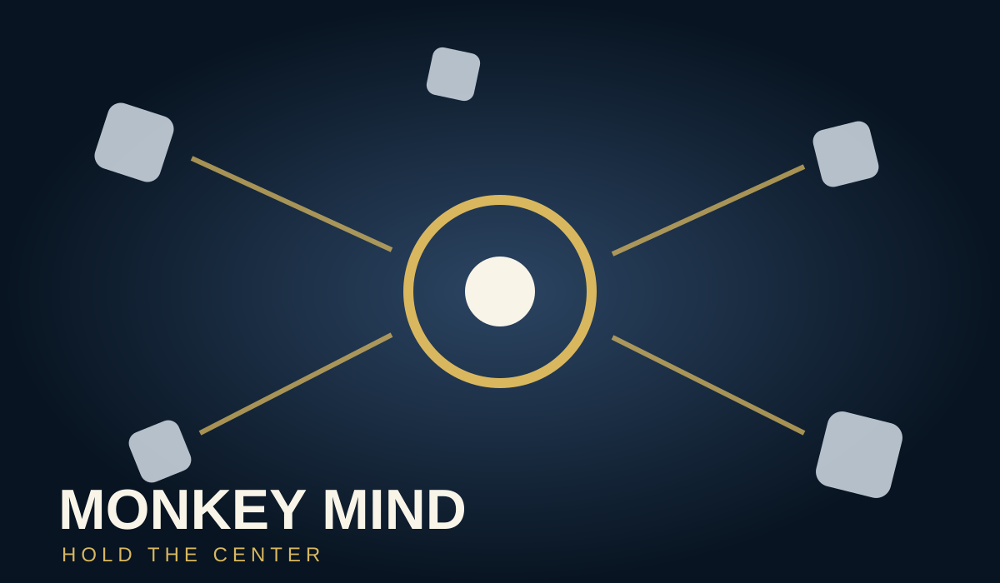
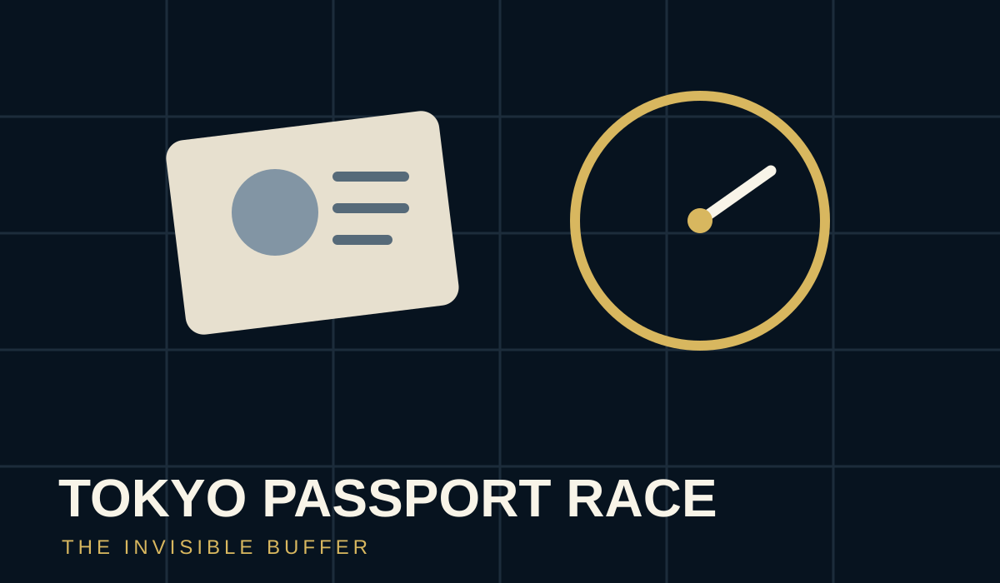
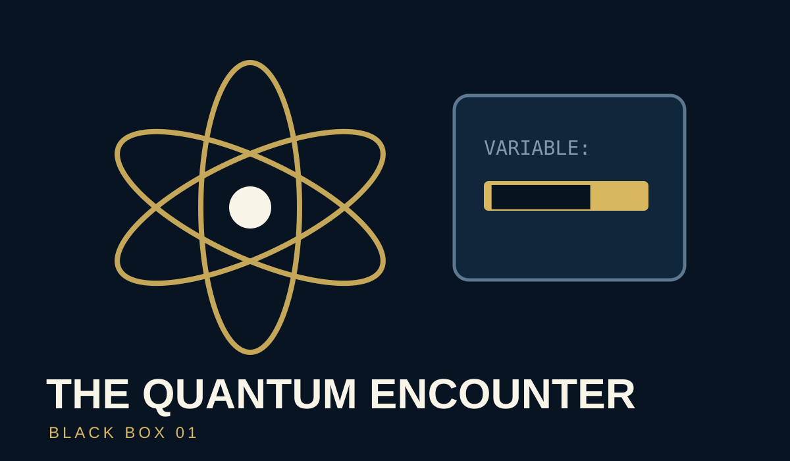
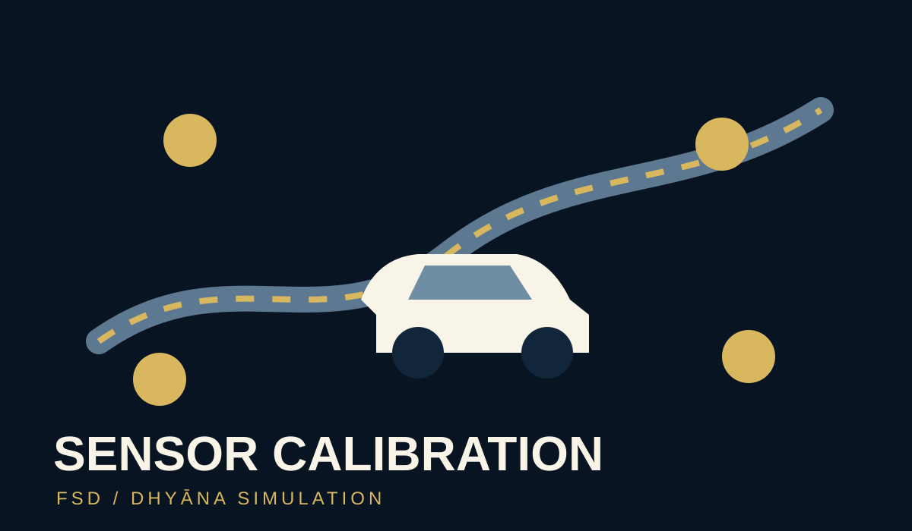
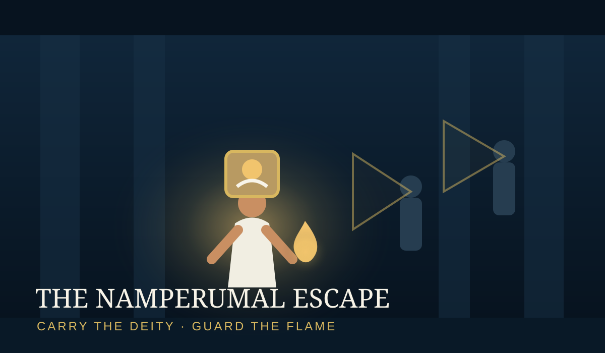

Attention Game
Monkey Mind
Hold the Center
Stay centered while distractions arrive from every direction. A playful test of attention, awareness, and recovery.
Play Game →Six games inspired by The Self-Driving Mind—from calming the monkey mind to navigating a lost passport, calibrating the inner vehicle, rescuing Srirangam Namperumal, and entering the world of Vijayanagara.

Hold the Center
Stay centered while distractions arrive from every direction. A playful test of attention, awareness, and recovery.
Play Game →
60 Minutes. One Lost Passport.
Reconstruct a real crisis through four puzzles and discover the invisible buffer meditation had quietly built.
Play Game →
Find the Missing Variable
Read two source files, then take a timed 15-question challenge about skepticism, Grace, and the 1978 encounter.
Play Game →
Keep Autopilot Engaged
Maintain truthfulness, non-violence, non-attachment, and energy discipline while the Tesla advances toward the destination.
Play Game →
Carry the Deity. Guard the Flame.
Carry Srirangam Namperumal through a temple under raid. Keep the flame open to see and move quickly—or cup it to disappear into darkness while guards patrol the corridor.
Play Game →Enter a Kingdom Built by Grace
Explore an interactive historical world where spiritual transmission, strategy, and the founding of an empire converge.
Play Game →Each experience opens a different doorway into the book’s central question: what changes when the mind no longer has to be forced inward?
Discover The Self-Driving Mind →